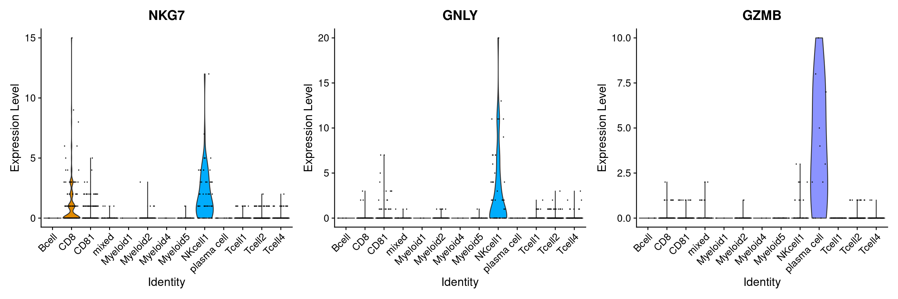

Analysis of HIV CSF/Blood dataset
Katharina Mikulik
- Description of dataset
- Sample quality
- Marker genes & Cell type annotation
- Visualization of cell types, conditions, samples and sequencing quality
- Contribution of CSF and blood samples to each cluster
- Label Transfer
- Appendix
- Independent annotation of Myeloid2 and Myeloid5 clusters as Microglia-like cells
- Different gene signatures found in the literature
- Genes which are upregulated in Myeloid2 compared to all other Myeloid clusters
- Quality of different samples before quality control
- Quality of the different samples after quality control
- References
Last updated: 2021-12-21
Checks: 6 1
Knit directory: report/
This reproducible R Markdown analysis was created with workflowr (version 1.6.2). The Checks tab describes the reproducibility checks that were applied when the results were created. The Past versions tab lists the development history.
Great! Since the R Markdown file has been committed to the Git repository, you know the exact version of the code that produced these results.
Great job! The global environment was empty. Objects defined in the global environment can affect the analysis in your R Markdown file in unknown ways. For reproduciblity it’s best to always run the code in an empty environment.
The command set.seed(20211203) was run prior to running the code in the R Markdown file. Setting a seed ensures that any results that rely on randomness, e.g. subsampling or permutations, are reproducible.
Great job! Recording the operating system, R version, and package versions is critical for reproducibility.
Nice! There were no cached chunks for this analysis, so you can be confident that you successfully produced the results during this run.
Using absolute paths to the files within your workflowr project makes it difficult for you and others to run your code on a different machine. Change the absolute path(s) below to the suggested relative path(s) to make your code more reproducible.
| absolute | relative |
|---|---|
| /media/ag-cherrmann/kmikulik/HIV_microglia/src/report/ | . |
Great! You are using Git for version control. Tracking code development and connecting the code version to the results is critical for reproducibility.
The results in this page were generated with repository version b5ca15a. See the Past versions tab to see a history of the changes made to the R Markdown and HTML files.
Note that you need to be careful to ensure that all relevant files for the analysis have been committed to Git prior to generating the results (you can use wflow_publish or wflow_git_commit). workflowr only checks the R Markdown file, but you know if there are other scripts or data files that it depends on. Below is the status of the Git repository when the results were generated:
Ignored files:
Ignored: analysis/Independent_cell_type_identification_Farhadian_dataset_cache/
Ignored: analysis/Triculture_dataset_analysis_and_integration_Farhadian_dataset_cache/
Untracked files:
Untracked: README.html
Unstaged changes:
Modified: README.md
Note that any generated files, e.g. HTML, png, CSS, etc., are not included in this status report because it is ok for generated content to have uncommitted changes.
These are the previous versions of the repository in which changes were made to the R Markdown (analysis/HIV_CSF_dataset_analysis.Rmd) and HTML (docs/HIV_CSF_dataset_analysis.html) files. If you’ve configured a remote Git repository (see ?wflow_git_remote), click on the hyperlinks in the table below to view the files as they were in that past version.
| File | Version | Author | Date | Message |
|---|---|---|---|---|
| Rmd | b5ca15a | Katharina782 | 2021-12-21 | wflow_publish(c(“analysis/HIV_CSF_dataset_analysis.Rmd,” “analysis/Triculture_dataset_analysis_and_integration_Farhadian_dataset.Rmd”), |
| html | 4266111 | Katharina782 | 2021-12-21 | Build site. |
| Rmd | dd3353f | Katharina782 | 2021-12-21 | wflow_publish(c("analysis/_site.yml“,”analysis/HIV_CSF_dataset_analysis.Rmd"), |
| html | 9597c36 | Katharina782 | 2021-12-21 | Build site. |
| Rmd | ea7e899 | Katharina782 | 2021-12-20 | wflow_publish(all = TRUE, republish = TRUE, delete_cache = TRUE) |
| Rmd | ddc1413 | Katharina782 | 2021-12-20 | resolve merge conflicts |
| html | 436b5c2 | Katharina782 | 2021-12-20 | Build site. |
| Rmd | f7243f8 | Katharina782 | 2021-12-20 | wflow_publish(all = TRUE, republish = TRUE, delete_cache = TRUE) |
| html | f7243f8 | Katharina782 | 2021-12-20 | wflow_publish(all = TRUE, republish = TRUE, delete_cache = TRUE) |
| Rmd | 813ec51 | Katharina782 | 2021-12-19 | wflow_publish(“analysis/HIV_CSF_dataset_analysis.Rmd”) |
| html | fce26d5 | Katharina782 | 2021-12-18 | Build site. |
| html | 2be0932 | Katharina782 | 2021-12-18 | Build site. |
| Rmd | 9591a5f | Katharina782 | 2021-12-18 | wflow_publish(“analysis/HIV_CSF_dataset_analysis.Rmd”) |
| html | b315085 | Katharina782 | 2021-12-18 | Build site. |
| html | ca459b4 | Katharina782 | 2021-12-17 | Build site. |
| Rmd | 04f6753 | Katharina782 | 2021-12-17 | wflow_publish(files = rmd) |
| html | 5830d4f | Katharina782 | 2021-12-16 | Build site. |
| Rmd | 3ba2986 | Katharina782 | 2021-12-16 | wflow_publish(“analysis/HIV_CSF_dataset_analysis.Rmd”) |
| Rmd | dde1097 | Katharina782 | 2021-12-10 | recent updates |
| html | dde1097 | Katharina782 | 2021-12-10 | recent updates |
setwd("/media/ag-cherrmann/kmikulik/HIV_microglia/src/report/")library(tidyverse)
library(Seurat)
library(edgeR)
library(Matrix)
library(data.table)
library(ggplot2)
library(dplyr)
library(ggrepel)
library(RColorBrewer)
library(pheatmap)
library(ggcorrplot)
library(ComplexHeatmap)
library(circlize)
library(ggpubr)
library(gridExtra)
library(corrplot)
library(rstatix)
library(knitr)
library(metap)
library(multtest)
library(readxl)
library(harmony)
library(SeuratDisk)
library(patchwork)Description of dataset
First, the analysis done by (Shelli F. Farhadian and Spudich 2018) was reproduced and then more extended analysis of the dataset was performed. The microglia-like cell cluster identified by (Shelli F. Farhadian and Spudich 2018) was of particular interest.
The dataset included three CSF samples from HIV infected patients, two blood samples from HIV infected patients, as well as, two CSF samples from uninfected patients. (Shelli F. Farhadian and Spudich 2018) first used two CSF and two bloods samples from infected patients for clustering and cell type annotation. After having identified a novel subcluster of myeloid cells, which they propose are microglia-like, they then confirm their results using the third CSF samples from an infected patient. Additionally, they compare the number of Myeloid2-specific transcripts to the CSF samples from uninfected patients. They show that the percentage of Myeloid2 transcripts was higher in CSF from infected patients than in CSF from uninfected patients and higher in CSF than in blood in general.
Blood and CSF were processed separately for scRNAseq using SeqWell. The seven samples were sequenced separately, one SeqWell array per CSF or PBMC sample (Shelli F. Farhadian and Spudich 2018).
For more details see (Shelli F. Farhadian and Spudich 2018).
First, the following analysis steps were performed similar as in the paper:
Importing files & creating Seurat objects
Read in data(count matrices) The data is available under https://www.ncbi.nlm.nih.gov/geo/query/acc.cgi?acc=GSE117397. There is one count matrix for each of the 7 samples.
path <- "/media/ag-cherrmann/kmikulik/HIV_microglia/data/GSE117397_RAW (1)/"
all_files <- list.files(path)
#Function to create a sparse matrix from each of the dataframes
sparse_matrix_from_df <- function(df) {
#print(df)
#class(df)
genes <- df$GENE
df_minus <- df[,-1]
#matrix <- as.matrix(df_minus)
sparse_matrix <- as.sparse(df_minus)
rownames(sparse_matrix) <- genes
return(sparse_matrix)
}
hiv_object_list <- map(seq.int(2,6), function(n) {
file <- all_files[grepl(paste0("GSM329382", n), all_files)]
name <- str_extract(file, "HIV[1-3]_\\w{3}")
df <- read_delim(paste0(path, file), delim = "\t")
sparse_matrix <- sparse_matrix_from_df(df)
seurat_ob <- CreateSeuratObject(sparse_matrix, project = name,
assay = "RNA", min.cells = 1,
min.features = 1)
list(df=df, sparse_matrix = sparse_matrix, seurat_ob = seurat_ob, name=name)
})
uninfected_list <- map(seq.int(7,8), function(n) {
file <- all_files[grepl(paste0("GSM329382", n), all_files)]
name <- str_extract(file, "Uninfected[12]_CSF")
df <- read_delim(paste0(path, file), delim = "\t")
sparse_matrix <- sparse_matrix_from_df(df)
seurat_ob <- CreateSeuratObject(sparse_matrix, project = name,
assay = "RNA", min.cells = 1,
min.features = 1, verbose = FALSE)
list(df=df, sparse_matrix = sparse_matrix, seurat_ob = seurat_ob, name=name)
})
#write.table(uninfected_list[[1]]$sparse_matrix,
# "/media/ag-cherrmann/kmikulik/HIV_microglia/src/job_test.tsv",
# sep = "\t")Create one Seurat object with all samples
hiv <- merge(hiv_object_list[[1]]$seurat_ob,
c(hiv_object_list[[2]]$seurat_ob,
hiv_object_list[[3]]$seurat_ob,
hiv_object_list[[4]]$seurat_ob,
hiv_object_list[[5]]$seurat_ob,
uninfected_list[[1]]$seurat_ob,
uninfected_list[[2]]$seurat_ob),
project = "hiv_total",
add.cell.ids = c("1B", "1C", "2B", "2C", "3C", "U1", "U2"))
# add percentage of mitochondrial genes to the metadata
hiv[["percent_mt"]] <- PercentageFeatureSet(hiv, pattern = "^MT-")
#saveRDS(hiv, "/media/ag-cherrmann/kmikulik/HIV_microglia/src/Reproduce_Farhadian_Paper/Seurat_objects/hiv_unprocessed")Quality control
Quality control was performed on every individual object.
Quality control was performed as described in (Shelli F. Farhadian and Spudich 2018). The 10% of cells with the highest percentage of mitochondrial genes was removed, as well as features which are expressed in less than 3 cells. Also, cells with number of features below 500 or above 2500 were removed. Quality control was done for each sample separately and then the samples were combined again before normalization.
# read in unprocessed seurat object containing all 7 samples
hiv <- readRDS("/media/ag-cherrmann/kmikulik/HIV_microglia/src/Reproduce_Farhadian_Paper/Seurat_objects/hiv_unprocessed")
# FUNCTION:
# to remove features that are expressed in less than three cells
# returns a list of feature names to keep
remove_features <- function(seurat_ob) {
count_matrix <- seurat_ob@assays$RNA@counts
ncells <- rowSums(count_matrix != 0) # how many cells are expressing a
#certain gene?
names(ncells[ncells > 3]) #extract gene names of genes expressed in more
#than 3 cells
}
# FUNCTION:
# to remove 10% of cell with highest mitochondrial gene expression:
#returns a list of cell names to keep
remove_mt_genes <- function(seurat_ob){
thr <- quantile(seurat_ob@meta.data$percent_mt, .9)
seurat_ob@meta.data %>%
filter(percent_mt < thr) %>%
rownames()
}
# SOME THOUGHTS:
# When doing the quality control how important is the order of the operations?
# If you first remove nFeatures > 500 and then the features exppressed in more than
# 3 cells, then the nFeatures might be below 500.
separate_objects <- SplitObject(hiv, split.by = "orig.ident")#[-c(5,6,7)]
# only keep two blood samples and two csf samples
qc <- lapply(X = separate_objects, FUN = function(x) {
#x[["percent_mt"]] <- PercentageFeatureSet(x, pattern = "^MT-")
# add percentage of mitochondrial genes to the metadata
x <- subset(x, features = remove_features(x))
#create a list of cells excluding the 10% of cells with the highest mt gene expression
x <- subset(x, nFeature_RNA < 2500 & nFeature_RNA > 500)
x <- subset(x, cells = remove_mt_genes(x))
# remove 10% of cells with highest mitochondrial gene expression
#x <- NormalizeData(x)
#x <- ScaleData(x)
})
hiv_filt <- merge(qc[[1]],
c(qc[[2]],
qc[[3]],
qc[[4]],
qc[[5]],
qc[[6]],
qc[[7]]),
project = "hiv_filt")#,
#add.cell.ids = c("1B", "1C", "2B", "2C", "3C", "U1", "U2"))Code for Dimensionality reduction & Clustering
**
Use blood and CSF samples from two patients (HIV1_CSF/Bld, HIV2_CSF/Bld) for further analysis like in the paper.
- Subset Seurat object
hiv4 <- subset(hiv_filt, orig.ident %in% c("HIV1_CSF", "HIV2_CSF", "HIV1_Bld", "HIV2_Bld"))- Normalize, Scale and find variable features
hiv4 <- NormalizeData(hiv4, verbose = FALSE)
hiv4 <- ScaleData(hiv4, verbose = FALSE)
hiv4 <- FindVariableFeatures(hiv4, verbose = FALSE)- Dimensionality reduction
PCA
Compute PCA for highly variable genes: The first 10 dimensions seem to account for most of the variance (see elbow plot). The plots seem to indicate that the blood samples and csf samples are different.
hiv4 <- RunPCA(hiv4, features = VariableFeatures(hiv4), verbose = FALSE)
# elbow plot to determine which PCs account for most of the variance
ElbowPlot(hiv4)
#pca plots
pca_plots <- comprehenr::to_list(for (i in 1:13)
DimPlot(hiv4, reduction = "pca", dims = i : (i+1)) +
theme())
do.call(gridExtra::grid.arrange, c(pca_plots, ncol=3, nrow = 5))
Clustering & tSNE embedding
- compute KNN-graph
- find clusters based on KNN-graph with Louvian algorithm
hiv4 <- FindNeighbors(hiv4, verbose = FALSE)
hiv4 <- FindClusters(hiv4, verbose = FALSE)
table(hiv4$seurat_clusters)
0 1 2 3 4 5 6 7 8 9 10 11 12 13 14
1301 1119 948 868 742 687 677 415 308 301 132 106 105 72 56 hiv4 <- RunTSNE(hiv4, dims = 1:10, verbose = FALSE)Sample quality
After performing quality control and removing cells with low number of features and high percentage of mitochondrial genes it does not seem that there is any batch effect, but rather the samples separate according to their origin (CSF or Blood). More detailed plots and statistical summaries of feature number, library size and percentage of mitochondrial can be found in the Appendix.
tsne_coord <- Embeddings(hiv4[["tsne"]]) # tsne coordinates
meta <- hiv4@meta.data # metadata
cm <- hiv4@assays$RNA@counts # count matrix
# UMAP with number of features detected per cell
p1 <- cbind(meta, tsne_coord) %>%
ggplot() +
geom_point(aes(x=tSNE_1, y=tSNE_2, col=nFeature_RNA), size=.5) +
scale_color_viridis_c() +
labs(title = "Number of features")
# percentage of mitochondrial genes per cell
p2 <- cbind(meta, tsne_coord) %>%
ggplot() +
geom_point(aes(x = tSNE_1, y = tSNE_2, col = percent_mt ), size = .5) +
scale_color_viridis_c() +
labs(title = "Percentage of mitochondrial genes")
# UMAP indicating the sample where each cell came from
p3 <- cbind(meta, tsne_coord) %>%
ggplot() +
geom_point(aes(x = tSNE_1, y = tSNE_2, col = orig.ident ), size = .5) +
labs(title = "Sample origin")
# UMAP labeled according to clusters
p4 <- cbind(meta, tsne_coord) %>%
ggplot() +
geom_point(aes(x = tSNE_1, y = tSNE_2, col = seurat_clusters ), size = .5) +
labs(title = "Clusters")
ggarrange(p1, p2, p3, p4, ncol = 2, nrow = 2)
Marker genes & Cell type annotation
marker_genes <- FindAllMarkers(hiv4, logfc.threshold = .01, min.pct = .01)The function FindAllMarkers() identifies differentially expressed genes between two groups of cells, in this case I compared one group of cells at a time against the rest of cells using a Wilcoxon Rank Sum test. The table below lists the two most highly differentially expressed genes for each clusters.
# filter for significant marker genes
#sign_marker_genes <- marker_genes %>% filter(p_val_adj <= .1)
sign_marker_genes <- read.table(file = "/media/ag-cherrmann/kmikulik/HIV_microglia/src/Reproduce_Farhadian_Paper/sign_marker_genes.tsv")
#show the top 10 differentially expressed genes for each cluster
#sign_marker_genes %>% group_by(cluster) %>% top_n(n = 2, wt = avg_logFC ) #%>%
#kable(caption = "Top two differentially expressed genes for each cluster")#, digits = c(3, format.args = list(scientific = TRUE)) #= TRUE))Cell type annotation with canonical marker genes
B cell markers
B cell markers are found primarily in cluster 7.
p1 <- VlnPlot(hiv4, features = c("MS4A1", "CD79A", "TCL1A"), pt.size = .01)
p2 <- RidgePlot(hiv4, features = c("MS4A1", "CD79A", "TCL1A"), sort = "decreasing" )
ggarrange(p1,p2, nrow = 2, ncol = 1)
NK cells
NK cells are primarily found in cluster 5 and 9. GZMB, a NK cell marker is also found in cluster 14.
p1 <- VlnPlot(hiv4, features = c("NKG7", "GNLY", "GZMB"),
pt.size = .01, ncol = 3)#, stack = TRUE)
p2 <- RidgePlot(hiv4, features = c("NKG7", "GNLY", "GZMB"), sort = "decreasing")
ggarrange(p1,p2, nrow = 2, ncol = 1)
CD4+ & CD8+ T cells
CD4+ T cells:
- A general T cell marker CD3E is expressed in cluster 0,1,3,4,5,6.
- IL7R in clusters 0-6
- TRAC in clusters 0-6, excluding 2
- CCR7 in 0,6,7
- LDHB not very clear, but 0,1,3,4,6
- LTB in 0-7
- CD2 in 1,3,4,5,9
Tcells1/2/3 are numbered arbitrarily, because they are not used for further analysis.
CD8+ T cells:
- CD8A is expressed in decreasing order in 1,5,3
# general T cell marker for CD4+ and CD8+ Tcells
p1 <- VlnPlot(hiv4, features = c("CD8A","CD3E"), pt.size = .01, ncol = 2)
p2 <- RidgePlot(hiv4, features = c("CD8A","CD3E"), sort = "decreasing")
p3 <- VlnPlot(hiv4, features = c("IL7R", "TRAC"), pt.size = 0.01)
p4 <- RidgePlot(hiv4, features = c("IL7R", "TRAC"), sort = "decreasing")
# helper T cells
p5 <- VlnPlot(hiv4, features = c("LTB", "CD2"), pt.size = .01, ncol = 2)
p6 <- RidgePlot(hiv4, features = c("LTB", "CD2"), sort = "decreasing")
# CD4+ naive T cells
p7 <- VlnPlot(hiv4, features = c("LDHB", "CCR7"), pt.size = .01, ncol = 2)
p8 <- RidgePlot(hiv4, features = c("LDHB", "CCR7"), sort = "decreasing")
ggarrange(p1, p2,p3, p4, p5, p6, p7,p8, ncol = 2, nrow = 4)
| Version | Author | Date |
|---|---|---|
| 9597c36 | Katharina782 | 2021-12-21 |
plasma cells
Cluster 14 seems to contain plasma cells.
p1 <- VlnPlot(hiv4, features = c("IGJ"), pt.size = .01, ncol = 2)
p2 <- RidgePlot(hiv4, features = c("IGJ"), sort = "decreasing")
ggarrange(p1,p2, nrow = 1, ncol = 2)
Myeloid cells
Myeloid cells encompass
- granulocytes
- monocytes
- macrophages
- dendritic cells
The clusters 8, 10, 11, 12, 13 are myeloid cells
Myeloid1, 3, 4 are assigned arbitrarily, because they are not of interest.
p1 <- VlnPlot(hiv4, features = c("LYZ", "FCER1A", "CD14", "FCGR3A"), # FCG3A is also expressed in cluster 9 (NK cells)
pt.size = .01, ncol = 2)
p2 <- RidgePlot(hiv4, features = c("LYZ", "FCER1A"),
sort = "decreasing", ncol = 2) # DC markers
p3 <- RidgePlot(hiv4, features = c("CD14", "FCGR3A"),
sort = "decreasing", ncol = 2) # monocytes (LYC also in monocytes)
ggarrange(p1,p2,p3, nrow = 3, ncol = 1)
Myeloid 5
Cluster 12 are Myeloid5 cells, which were characterized by (Shelli F. Farhadian and Spudich 2018) with the markers FCER1A, CD1C
# Myeloid 5 in the paper
p1 <- VlnPlot(hiv4, features = c( "FCER1A", "CD1C"), pt.size = .01, ncol = 2)
p2 <- RidgePlot(hiv4, features = c("FCER1A", "CD1C"), sort = "decreasing", ncol = 2)
ggarrange(p1, p2, nrow = 2, ncol = 1)
| Version | Author | Date |
|---|---|---|
| 9597c36 | Katharina782 | 2021-12-21 |
Myeloid 2
Cluster 11 is the Myeloid2 clusters with expression of AXL, APOE, TREM2. These genes are enriched in neurodegenerative disease-associated microglia (Shelli F. Farhadian and Spudich 2018). CTSB, APOC1, MSR1, C1QA-C are expressed more highly in Myeloid2 compared to other myeloid clusters (Shelli F. Farhadian and Spudich 2018).
# Myeloid 2
p1 <- VlnPlot(hiv4, features = c("AXL", "APOE", "TREM2"), pt.size = .01, ncol = 3)
p2 <- RidgePlot(hiv4, features = c("AXL", "APOE", "TREM2"), sort = "decreasing")
p3 <- VlnPlot(hiv4, features = c("CTSB", "APOC1", "MSR1", "C1QA"),
pt.size = .01, ncol = 4)
p4 <- RidgePlot(hiv4, features = c("CTSB", "APOC1", "MSR1", "C1QA"),
sort = "decreasing", ncol = 4)
ggarrange(p1, p2, p3, p4, ncol = 1, nrow = 4)
- Why is the mixed population primarily composed of cells from HIV1 patient blood sample?
- Why are T cells primarily from CSF samples and CD8 T cells primarily from blood?
Table of annotation of cell types to clusters
**
Idents(hiv4) <- "seurat_clusters"
cell_types <- c("Tcell2", "CD8", "mixed", "CD81", "Tcell3", "NKcell1",
"Tcell1", "Bcell", "Myeloid1", "NKcell2", "Myeloid3", "Myeloid2"
, "Myeloid5", "Myeloid4", "plasma cell" )
names(cell_types) <- levels(hiv4)
hiv4 <- RenameIdents(hiv4, cell_types)
as.data.frame(cell_types) %>% rownames_to_column("cluster") %>% knitr::kable()| cluster | cell_types |
|---|---|
| 0 | Tcell2 |
| 1 | CD8 |
| 2 | mixed |
| 3 | CD81 |
| 4 | Tcell3 |
| 5 | NKcell1 |
| 6 | Tcell1 |
| 7 | Bcell |
| 8 | Myeloid1 |
| 9 | NKcell2 |
| 10 | Myeloid3 |
| 11 | Myeloid2 |
| 12 | Myeloid5 |
| 13 | Myeloid4 |
| 14 | plasma cell |
# add cell types to metadata
hiv4 <- AddMetaData(hiv4, metadata = Idents(hiv4), col.name = "cell_type")
# add condition blood or csf to metadata
Idents(hiv4) <- "orig.ident"
conditions <- c("Blood", "Blood", "CSF", "CSF")
names(conditions) <- c("HIV1_Bld", "HIV2_Bld", "HIV1_CSF", "HIV2_CSF")
hiv4 <- RenameIdents(hiv4, conditions)
hiv4 <- AddMetaData(hiv4, col.name = "Condition", metadata = Idents(hiv4))
Overview of some of the most important marker genes:
DotPlot(object = hiv4, features = c("MS4A1", # B cells
"TRAC", "IL7R",
"CD8A", # CD8 T cells
"NKG7", "GNLY", # NK cells
"CD3E", # T cells
"CD14","FCGR3A", "LYZ", # myeloid cells
"IGJ", # plasma cells
"AXL", "APOE", "TREM2", # myeloid 2
"FCER1A", "CD1C") , # myeloid 5
group.by = "cell_type") +
theme(axis.text.x = element_text(angle = 45, vjust = 0.8, hjust=1))
Visualization of cell types, conditions, samples and sequencing quality
The tSNE embedding with the annotated cell types resembles the results by (Shelli F. Farhadian and Spudich 2018). There are two clusters, Myeloid2 and Myeloid5 which mainly contain cells from CSF. These two clusters were termed microglia-like by (Shelli F. Farhadian and Spudich 2018). In the following analysis I will try to confirm this and investigate the Myeloid2 cluster in more detail.
p1 <- DimPlot(hiv4, reduction = "tsne", label = TRUE,
group.by = "cell_type", pt.size = 0.1) +
NoLegend() +
labs(title = "Cell types")
p2 <- DimPlot(hiv4, reduction = "tsne", group.by = "Condition", pt.size = 0.1) +
labs(title = "CSF or Blood origin")
p3 <- DimPlot(hiv4, reduction = "tsne", group.by = "orig.ident", pt.size = 0.1) +
labs(title = "Sample origin - patient")
p4 <- FeaturePlot(hiv4, features= "nCount_RNA", pt.size = 0.1) +
scale_color_viridis_c() +
labs(title= "number of counts")
ggarrange(p1,p2,p3,p4, ncol = 2, nrow = 2)
#p1 + p2 + p3 + p4Contribution of CSF and blood samples to each cluster
The histogram below shows that Myeloid2 and Myeloid5 are predominantly composed of CSF cells, while Myeloid1, Myeloid3 and Myeloid4 are predominantly composed of Blood cells. This reflects the findings of (Shelli F. Farhadian and Spudich 2018) very nicely.
custom_color <- c("#C3D7A4", "#4E84C4", "#52854C", "#293352")
#plot a barplot of the proportions of samples and cell types
ggplot(hiv4@meta.data) +
geom_bar(aes(x = cell_type, fill = orig.ident)) +
scale_fill_manual( values = custom_color) +
ylab("Number of cells in each cluster") +
theme(axis.text.x = element_text(angle = 45, vjust = 0.8, hjust=1)) +
labs(title = "Cell types per sample")
Question: Myeloid1, Myeloid2 are mainly found in Blood cells, Myeloid4 is only found in Blood cells from HIV1 patient. What does that mean?
Number of Myeloid2 and Myeloid5 cells per sample
Myeloid2 cells originate from the CSF samples of HIV infected patients, while a few cells (thirteen) classified as Myeloid5 cells originate from Blood samples.
hiv4@meta.data %>%
filter(cell_type %in% c("Myeloid2", "Myeloid5")) %>%
group_by(cell_type, orig.ident) %>%
summarize(n = n()) %>%
kable(caption = "Number of Myeloid2 & Myeloid5 cells from different patients/samples")| cell_type | orig.ident | n |
|---|---|---|
| Myeloid2 | HIV1_CSF | 71 |
| Myeloid2 | HIV2_CSF | 35 |
| Myeloid5 | HIV1_Bld | 4 |
| Myeloid5 | HIV1_CSF | 24 |
| Myeloid5 | HIV2_Bld | 9 |
| Myeloid5 | HIV2_CSF | 68 |
Which genes are upregulated in Myeloid-2 compared to the four other myeloid subsets?
In the paper they find 60 genes that are upregulated compared to the other 4 myeloid subsets. (FDR < 0.01)
Compare the genes upregulated in myeloid-2 to the four other myeloid subsets. FindAllMarkers() will compare one cluster to all other clusters. FindMarkers() will compare an indicated cluster with a second indicated cluster. Therefore, the difference will not be diluted, which might be the case if we compare one cluster to many other clusters.
#import the 60 genes that were upregulated in Myeloid-2 in the paper compared to the four other myeloid subsets
paper <- read.table(file = "/media/ag-cherrmann/kmikulik/HIV_microglia/data/Myeloid-2_genes_paper.csv", sep = "\t",
header = FALSE, skipNul = TRUE)#, n_max = 60)
paper[1,] <- "APOC1"
colnames(paper) <- ""
paper <- as.vector(paper[,1])
Idents(hiv4) <- "cell_type"
all.comp <- purrr::map(c(1,3,4,5), function(n){
markers <- FindMarkers(hiv4,
ident.1 = "Myeloid2",
ident.2 = paste0("Myeloid", n),
only.pos = TRUE,
verbose = FALSE)
markers <- rownames_to_column(markers, var = "gene")
name <- paste0("Comparison Myeloid 2 vs Myeloid ", n)
list(df = markers, name = name)
})
my2_genes <- map(seq.int(1,4), function(n) {
name <- all.comp[[]]$name
my2_genes <- all.comp[[n]]$df %>%
filter(p_val_adj <= .2) %>%
filter(gene %in% paper)
my2_genes <- my2_genes[,"gene"]
})Expression of the 60 genes identified in the paper as Myeloid 2 markers
The genes show the highest expression in Myeloid2 and for some genes like CD74 and genes of the HLA family are also highly expressed in Myeloid5 cells. However, there are a few genes, like FAU, TPT1, TMSB10 and MIR4426 which do not show expression specific to the Myeloid2 cluster. It is unclear why (Shelli F. Farhadian and Spudich 2018) chose these genes as signature genes.
DotPlot(hiv4, features = c(paper)) +
coord_flip() +
theme(axis.text.x = element_text(angle = 45, vjust = 0.8, hjust=1))
Warning in FetchData(object = object, vars = features, cells = cells): The
following requested variables were not found: SELENOP
Frequency of Myeloid2 transcripts in Blood, CSF and Uninfected samples
First, it is important to mention, that after quality control the number of cells is significantly lower in the two uninfected CSF samples, 216 and 340 respectively, compared to all other samples which contain between 932 and 2520 cells. However, also the CSF sample from patient1 (HIV1_CSF) with 932 cells contains much fewer cells compared to all other samples.
The results shown by (Shelli F. Farhadian and Spudich 2018) are controversial, because when they compare the percentage of Myeloid2 transcripts between the three conditions, they pool 1770 cells for the uninfected condition, which is a lot more than we find here. Yet, they do not mention that they used different thresholds for quality control of the uninfected samples. Therefore, I was not able to reproduce their findings. Below, I will describe the percentage of Myeloid2 transcripts when comparing the conditions with the number of cells obtained when using the same thresholds for quality control as described in the paper.
The interpretability of the comparison probably suffers from the fact that the number of cells in the uninfected conditions is so much smaller.
hiv7 <- readRDS("/media/ag-cherrmann/kmikulik/HIV_microglia/src/Reproduce_Farhadian_Paper/Seurat_objects/total_7_samples_filtered_seurat_object.rds")
hiv7@meta.data %>% group_by(orig.ident) %>%
summarise(number_of_cells = n()) %>%
kable(caption = "Number of cells per sample")| orig.ident | number_of_cells |
|---|---|
| HIV1_Bld | 2076 |
| HIV1_CSF | 932 |
| HIV2_Bld | 2520 |
| HIV2_CSF | 2309 |
| HIV3_CSF | 1384 |
| Uninfected1_CSF | 216 |
| Uninfected2_CSF | 340 |
hiv7 <- readRDS("/media/ag-cherrmann/kmikulik/HIV_microglia/src/Reproduce_Farhadian_Paper/Seurat_objects/total_7_samples_filtered_seurat_object.rds")
# create a list for the 3 different conditons
subset.list <- list(infected_blood = c("HIV1_Bld", "HIV2_Bld"),
infected_csf = c("HIV1_CSF", "HIV2_CSF", "HIV3_CSF"),
uninfected_csf = c("Uninfected1_CSF", "Uninfected2_CSF"))
# for each cell of each condition calculate a percentage of Myeloid2 transcripts
# and combine to a dataframe
percentage_my2_transcripts <- map2_dfr(subset.list, names(subset.list), function(n, name) {
count_m <- subset(hiv7, orig.ident %in% n)@assays$RNA@counts
total_transcripts <- colSums(count_m) # number of transcripts per cell
my2_matrix <- count_m[rownames(count_m) %in% paper, ] # get only myeloid2 genes
my2_transcripts <- colSums(my2_matrix) # sum of myeloid2 transcripts
tibble(percentage = my2_transcripts/total_transcripts, condition = name)
})Is there a significant difference in percentage of Myeloid2 transcripts between the three conditions?
percentage_my2_transcripts %>%
group_by(condition) %>%
summarise(n = n(), q25 = quantile(percentage, .25),
q50 = quantile(percentage, .5),
q75 = quantile(percentage, .75),
mean = mean(percentage),
median = median(percentage)) %>%
kable(digits = 4,
caption = "Summary statistics of percentage of Myeloid2 transcripts for different conditions")| condition | n | q25 | q50 | q75 | mean | median |
|---|---|---|---|---|---|---|
| infected_blood | 4596 | 0.0155 | 0.0189 | 0.0224 | 0.0192 | 0.0189 |
| infected_csf | 4625 | 0.0151 | 0.0183 | 0.0218 | 0.0203 | 0.0183 |
| uninfected_csf | 556 | 0.0120 | 0.0151 | 0.0287 | 0.0216 | 0.0151 |
To see if there is a difference between the three conditions a Kruskal-Wallis-Test was performed. We get a p-value of 4.88 * 10^-9. Therefore, we will perform a pairwise Wilcox test to see which condtions are different from each other.
percentage_my2_transcripts %>%
rstatix::kruskal_test(percentage ~ condition) %>%
kable(caption = "Kruskal Wallis Test")| .y. | n | statistic | df | p | method |
|---|---|---|---|---|---|
| percentage | 9777 | 38.27649 | 2 | 0 | Kruskal-Wallis |
Pairwise Wilcox test:
In the table and boxplot below we can see that all three conditions are significantly different from each other. As mentioned above, the sample size is much smaller for the uninfected condition. P-values are listed in the table below.
Only the p-value for the comparison between infected CSF vs uninfected CSF is the same as in the paper, where they state that the Myeloid2 transcripts were found at lower levels in the uninfected samples compared to the infected samples. Otherwise, the results contradict the results found by (Shelli F. Farhadian and Spudich 2018). Contradictory to what is claimed in the paper, it is not evident that both infected and uninfected CSF samples have higher rates of Myeloid2 transcripts, rather the Blood samples seem to have the highest rate of Myeloid2 transcripts.
The comparison drawn is questionable in general, because what the boxplots below show is that there is some level of Myeloid2 transcript expression in all conditions. However, there are more outliers with very high percentage of Myeloid2 transcripts in both CSF samples. This might be a hint that in the CSF samples there is a outlier population representing the Myeloid2 cluster, which cannot be seen in the blood sample. Since the median is rather robust to outliers, even if in CSF samples there are some cells which have much higher frequencies of transcripts, it might be that the median is still lower than in blood samples.
Therefore, comparing the overall percentage of Myeloid2 transcripts might not provide any insights on the number of Myeloid2 cells in a particular sample.
p1 <- percentage_my2_transcripts %>% ggplot() +
geom_boxplot(aes(x = condition, y = percentage, fill = condition)) +
xlab("Sample origin") +
ylab("Frequency of myeloid2 transcripts per cell") +
labs(title = "All cells") +
stat_pvalue_manual(percentage_my2_transcripts %>%
rstatix::pairwise_wilcox_test(percentage ~ condition) %>%
rstatix::add_xy_position()) +
NoLegend()
p2 <- percentage_my2_transcripts %>% ggplot() +
geom_boxplot(aes(x = condition, y = percentage, fill = condition),
outlier.shape = NA) +
xlab("Sample origin") +
ylab("Frequency of myeloid2 transcripts per cell") +
labs(title = "Remove outliers to see difference") +
NoLegend()
ggarrange(p1, p2, ncol = 2, nrow = 1)
percentage_my2_transcripts %>%
rstatix::wilcox_test(percentage ~ condition) %>% kable(caption = "Pairwise Wilcox Test")| .y. | group1 | group2 | n1 | n2 | statistic | p | p.adj | p.adj.signif |
|---|---|---|---|---|---|---|---|---|
| percentage | infected_blood | infected_csf | 4596 | 4625 | 11090858 | 2.95e-04 | 2.95e-04 | *** |
| percentage | infected_blood | uninfected_csf | 4596 | 556 | 1441190 | 8.00e-07 | 1.60e-06 | **** |
| percentage | infected_csf | uninfected_csf | 4625 | 556 | 1456760 | 3.00e-07 | 9.00e-07 | **** |
Label Transfer
For reference see: https://satijalab.org/seurat/articles/integration_mapping.html
After reproducing the results from (Shelli F. Farhadian and Spudich 2018) the next step was to transfer the labels from the four HIV+ Blood and CSF samples (reference) to the remaining samples (query):
- 1 CSF smaple from HIV-1 infected patient
- 2 CSF samples from uninfected patients
Myeloid1, Myeloid3 and Myeloid4 are not or hardly present in the CSF samples, because they originated exclusively from the blood samples in the reference dataset. However, there are 132 cells annotated as Myeloid2 and 43 cells annotated as Myeloid5.
# Seurat objects with annotated cell types
hiv4 <- readRDS("/media/ag-cherrmann/kmikulik/HIV_microglia/src/Reproduce_Farhadian_Paper/Seurat_objects/non_integrated_HIV1_HIV2_4samples_seurat_object.rds")# read in the dataset after quality control
hiv_filt <- readRDS("/media/ag-cherrmann/kmikulik/HIV_microglia/src/Reproduce_Farhadian_Paper/Seurat_objects/total_7_samples_filtered_seurat_object.rds")
hiv_list <- SplitObject(hiv_filt, split.by = "orig.ident")# merge the 3 query Seurat objects
query <- merge(hiv_list[["Uninfected1_CSF"]],
c(hiv_list[["Uninfected2_CSF"]], hiv_list[["HIV3_CSF"]]))
# find transfer anchors between the 3 query samples and the 4 samples we have
# analyzed previously
hiv4_transfer_anchors <- FindTransferAnchors(reference = hiv4,
query = query,
dims = 1:15,
normalization.method = "LogNormalize",
reference.reduction = "pca",
reduction = "pcaproject",
verbose = FALSE)
predictions <- TransferData(anchorset = hiv4_transfer_anchors,
refdata = hiv4$cell_type,
dims = 1:15,
verbose = FALSE)
#predictions %>% head %>% kable()
query <- AddMetaData(query, metadata = predictions)
#saveRDS(query, "/media/ag-cherrmann/kmikulik/HIV_microglia/src/Reproduce_Farhadian_Paper/Seurat_objects/query_seurat_object_label_transfer")Frequency of eac cell type
as.data.frame(table(query$predicted.id)) %>%
column_to_rownames("Var1") %>%
kable(caption = "Frequency of each cell type in query samples")| Freq | |
|---|---|
| Bcell | 3 |
| CD8 | 137 |
| CD81 | 271 |
| mixed | 57 |
| Myeloid1 | 2 |
| Myeloid2 | 132 |
| Myeloid4 | 2 |
| Myeloid5 | 43 |
| NKcell1 | 55 |
| plasma cell | 12 |
| Tcell1 | 153 |
| Tcell2 | 732 |
| Tcell4 | 341 |
Marker gene expression of the predicted cell types
The Label Transfer seems to work nicely, judging from the correct expression of common cell type markers for the individual cell types.
Myeloid2 marker genes
# ceck the Myeloid2 markers
p1 <- VlnPlot(query,
features = c("AXL", "APOE", "TREM2"),
group.by = "predicted.id",
pt.size = .01, ncol = 3)
p2 <- VlnPlot(query,
features = c("CTSB", "MSR1", "C1QA"),
group.by = "predicted.id",
pt.size = .01, ncol = 4)
figure <- ggarrange(p1, p2, ncol = 1, nrow = 2)
annotate_figure(figure, top = text_grob("Myeloid2 marker genes"))
Myeloid5 marker genes
# Myeloid 5 markers
p1 <- VlnPlot(query, c("FCER1A", "CD1C"),
group.by = "predicted.id", pt.size = .01, ncol = 2)
p1
Plasma cell marker genes
# plasma cell markers
p2 <- VlnPlot(query, features = c("IGJ"),
group.by = "predicted.id", pt.size = .01, ncol = 2)
p2
CD8 T cell marker genes
# CD8 T Cells
p3 <- VlnPlot(query, features = c("CD8A"),
group.by = "predicted.id", pt.size = .01, ncol = 2) + NoLegend()
p3
T cell marker genes
# T cells
VlnPlot(query, features = c("IL7R", "TRAC"),
group.by = "predicted.id", pt.size = .01, ncol = 2)
NK cell marker genes
# NK cells
VlnPlot(query, features = c("NKG7", "GNLY", "GZMB"),
group.by = "predicted.id", pt.size = .01, ncol = 3)

UMAP projection after label transfer
A UMAP embedding of the four reference samples was calculated (figure below, left) and the annotated qery sample is shown in embedded in the same space (figure below, right. Now that we have annotated the cell types of all seven samples we can use them for further analysis.
hiv4_test <- RunUMAP(hiv4, dims = 1:15,
reduction = "pca",
return.model = TRUE,
verbose = FALSE)
Warning: The default method for RunUMAP has changed from calling Python UMAP via reticulate to the R-native UWOT using the cosine metric
To use Python UMAP via reticulate, set umap.method to 'umap-learn' and metric to 'correlation'
This message will be shown once per session
hiv3csf <- MapQuery(anchorset = hiv4_transfer_anchors,
reference = hiv4_test, query = query,
refdata = list(celltype = "cell_type"),
reference.reduction = "pca",
reduction.model = "umap",
verbose = FALSE)
Warning: Keys should be one or more alphanumeric characters followed by an
underscore, setting key from ref.pca_ to refpca_
Warning: UNRELIABLE VALUE: One of the 'future.apply' iterations
('future_lapply-1') unexpectedly generated random numbers without declaring so.
There is a risk that those random numbers are not statistically sound and the
overall results might be invalid. To fix this, specify 'future.seed=TRUE'. This
ensures that proper, parallel-safe random numbers are produced via the L'Ecuyer-
CMRG method. To disable this check, use 'future.seed = NULL', or set option
'future.rng.onMisuse' to "ignore".
Warning: Keys should be one or more alphanumeric characters followed by an
underscore, setting key from ref.pca_ to refpca_
Warning: All keys should be one or more alphanumeric characters followed by an
underscore '_', setting key to refpca_
Warning: No assay specified, setting assay as RNA by default.
query <- TransferData(anchorset = hiv4_transfer_anchors,
reference = hiv4_test,
query = query,
refdata = list(celltype = "cell_type"),
verbose = FALSE)
query <- IntegrateEmbeddings(anchorset = hiv4_transfer_anchors,
reference = hiv4_test,
query = query,
new.reduction.name = "ref.pca",
verbose = FALSE)
Warning: Keys should be one or more alphanumeric characters followed by an
underscore, setting key from ref.pca_ to refpca_
Warning: UNRELIABLE VALUE: One of the 'future.apply' iterations
('future_lapply-1') unexpectedly generated random numbers without declaring so.
There is a risk that those random numbers are not statistically sound and the
overall results might be invalid. To fix this, specify 'future.seed=TRUE'. This
ensures that proper, parallel-safe random numbers are produced via the L'Ecuyer-
CMRG method. To disable this check, use 'future.seed = NULL', or set option
'future.rng.onMisuse' to "ignore".
Warning: Keys should be one or more alphanumeric characters followed by an
underscore, setting key from ref.pca_ to refpca_
Warning: All keys should be one or more alphanumeric characters followed by an
underscore '_', setting key to refpca_
query <- ProjectUMAP(query = query,
query.reduction = "ref.pca",
reference = hiv4_test,
reference.reduction = "pca",
reduction.model = "umap", verbose = FALSE)
Warning: No assay specified, setting assay as RNA by default.# Visualize the query cells alongside the reference
p1 <- DimPlot(hiv4_test,
reduction = "umap",
group.by = "cell_type",
label = TRUE,
label.size = 5,
repel = TRUE,
pt.size = .1) + NoLegend() +
ggtitle("Reference anntoations")
p2 <- DimPlot(query,
reduction = "ref.umap",
group.by = "predicted.celltype",
label = TRUE,
label.size = 5,
pt.size = .1,
repel = TRUE) + NoLegend() +
ggtitle("Transferred Labels")
p1 + p2
#save this new Seurat obejct including the SCTransformatin
#saveRDS(hiv_label_transfer, file = "/media/ag-cherrmann/kmikulik/HIV_microglia/src/Reproduce_Farhadian_Paper/Seurat_objects/total_7_samples_label_transfer.rds")Contribution of CSF and blood samples to each cluster after label transfer
How are cell types distributed across samples, considering also the additional HIV+ CSF sample and the two uninfected samples which were annotated using label transfer.
hiv7 <- readRDS("/media/ag-cherrmann/kmikulik/HIV_microglia/src/Reproduce_Farhadian_Paper/Seurat_objects/total_7_samples_label_transfer.rds")
custom_color <- c("#C3D7A4", "#4E84C4", "#52854C", "#293352", "lightskyblue", "orangered2", "orange2")
#ordering
lvls <- c("Myeloid2", "Myeloid5", "Myeloid1", "Myeloid3", "Myeloid4",
"plasma cell", "NKcell1", "NKcell2", "Bcell", "CD8", "CD81",
"Tcell1", "Tcell2", "Tcell3", "Tcell4", "mixed"
)
#plot a barplot of the proportions of samples and cell types
p2 <- hiv7@meta.data %>%
mutate(cell_type = factor(cell_type, levels=lvls)) %>%
ggplot() +
geom_bar(aes(x = cell_type, fill = orig.ident)) +
scale_fill_manual( values = custom_color) +
ylab("Number of cells in each cluster") +
theme(axis.text.x = element_text(angle = 45, vjust = 0.8, hjust=1)) +
labs(title = "Cell types per sample after label transfer")
custom_color <- c("#C3D7A4", "#4E84C4", "#52854C", "#293352")
#plot a barplot of the proportions of samples and cell types
p1 <- hiv4@meta.data %>%
mutate(cell_type = factor(cell_type, levels=lvls)) %>%
ggplot() +
geom_bar(aes(x = cell_type, fill = orig.ident)) +
scale_fill_manual( values = custom_color) +
ylab("Number of cells in each cluster") +
theme(axis.text.x = element_text(angle = 45, vjust = 0.8, hjust=1)) +
labs(title = "Cell types per sample after label transfer")
ggarrange(p1, p2, ncol = 2, nrow = 1)
Appendix
Independent annotation of Myeloid2 and Myeloid5 clusters as Microglia-like cells
In the following part I tried to confirm that the Myeloid2 (and maybe the Myeloid5) cluster are microglia-like cells. (Shelli F. Farhadian and Spudich 2018) used 60 genes to characterize Myeloid2 cells, some of which are found in disease-associated microglia. Searching the literature for additional microglia signatures we might be able to independently confirm this microglia-like signature.
Below you can click on the tabs to see the results of using different gene signatures to confirm the microglia-like signature of Myeloid2 and Myeloid5. The function used to calculate the gene signature score in different cells is AddModuleScore().
Function Add Module Score
This Function calculates the average expression levels of each cluster on single cell level, subtracted by the aggregated expression of control feature sets. The analyzed features are binned based on averaged expression and the control features are randomly selected from each bin.
# read in Seurat object
hiv4 <- readRDS("/media/ag-cherrmann/kmikulik/HIV_microglia/src/Reproduce_Farhadian_Paper/Seurat_objects/non_integrated_HIV1_HIV2_4samples_seurat_object.rds")Different gene signatures found in the literature
Farhadian et al.
60 genes were used by Farhadian et al. to distinguish the Myeloid2 cell type. 28 of the 60 genes used as microglia signature in the (Shelli F. Farhadian and Spudich 2018) Paper are also found in the 881 microglia signature genes defined by (David Gosselin 2020).
## Read in list of microglia signature genes found in the Gosselin paper
## which are also found in the HIV1 and HIV2 samples:
microglia_genes <- read.table("/media/ag-cherrmann/kmikulik/HIV_microglia/data/Microglia_gene_signatur_found_in_HIV1_HIV2_samples")# Are there any genes overlapping between Farhadian and Glass paper?
#import the 60 genes that were upregulated in Myeloid-2 in the paper compared to the four other myeloid subsets
paper <- read.table(file = "/media/ag-cherrmann/kmikulik/HIV_microglia/data/Myeloid-2_genes_paper.csv", sep = "\t", header = FALSE, skipNul = TRUE)#, n_max = 60)
paper[1,] <- "APOC1"
colnames(paper) <- ""
paper <- as.vector(paper[,1])
# Are there any genes overlapping between Farhadian and Glass paper?
#paper %in% as.vector(microglia_genes[["gene_name"]])
overlap <- as.vector(microglia_genes[["gene_name"]]) [as.vector(microglia_genes[["gene_name"]]) %in% paper]
#length(overlap)
#overlap %>% kable()# get only genes present in the HIV1 and HIV2 samples!
paper <- paper[paper %in% rownames(hiv4@assays$RNA@counts)]
hiv_farhadian <- AddModuleScore(hiv4,
features = paper)
Idents(hiv_farhadian) <- "cell_type"
FeaturePlot(hiv_farhadian, features = "Cluster1" , pt.size = .5, label = TRUE, repel = TRUE) +
scale_colour_gradientn(colours = rev(brewer.pal(n = 11, name = "RdBu"))) +
labs(title = "Farhadian et al., 2018: Microglia signature genes")
Gosselin et al.
Here, I will first use the 881 microglia marker genes and then also try the list of TFs provided by (David Gosselin 2020).
The Transcription Factors mentioned in the paper do not seem to be specific for the Myeloid2 cluster. Interestingly, there is a very low score
of these microglia genes in Myeloid5, while there is a higher score in Myeloid1 and Myeloid4 cells.
gosselin_tfs <- read.table( "/media/ag-cherrmann/kmikulik/HIV_microglia/data/TFs_microglia_Glass_paper.txt")
hiv4_glass <- AddModuleScore(hiv4,
features = as.vector(gosselin_tfs))
Warning: The following features are not present in the object: MEF2B, SALL1, not
searching for symbol synonyms
Idents(hiv4_glass) <- "cell_type"
FeaturePlot(hiv4_glass, features = "Cluster1", label = TRUE, repel = TRUE, pt.size = .7) +
scale_colour_gradientn(colours = rev(brewer.pal(n = 11, name = "RdBu"))) +
labs(title = "Gosselin D. et al., 2017: Microglia Transcription Factors") 
HAND signature
(HAND = HIV-associated neurodegenerative disease)
(David Gosselin 2020) defined a group of genes upregulated in microglia from patients with HAND.
This gene signature can, however not be detected in any of the Myeloid clusters.
hand_genes <- read.table("/media/ag-cherrmann/kmikulik/HIV_microglia/data/HAND_upregulated_microglia_signature_genes")
hand_genes <- as.vector(hand_genes[["genes"]])
hiv_hand <- AddModuleScore(hiv4,
features = hand_genes)
Idents(hiv_hand) <- "cell_type"
FeaturePlot(hiv_hand, features = "Cluster1", pt.size = .01) +
scale_colour_gradientn(colours = rev(brewer.pal(n = 11, name = "RdBu"))) +
labs(title = "microglia signature genes upregulated in HAND")
Grassivaro et al.
(Francesca Grassivaro and Martino 2018) identified features related to convergence of microglia and macrophages. They identified 14 genes that are conserved in microglia throughout development, but not expressed in myeloid-derived monocytes (MDM). Only in the context of neuroinflammation are the 14 genes expressed in macrophages as well.
tfs <- c("CRYBB1", "GARNL3", "GPR34", "LAG3", "NUAK1", "OLFML3", "RTN1", "SALL3", "SLC1A3", "SPARC", "TNFRSF17")
tfs %in% rownames(hiv4@assays$RNA@counts)
[1] TRUE TRUE TRUE TRUE TRUE TRUE TRUE TRUE TRUE TRUE TRUE
hivt <- AddModuleScore(hiv4,
features = tfs)
Idents(hivt) <- "cell_type"
FeaturePlot(hivt, features = "Cluster2",
label = TRUE,
repel = TRUE, pt.size = .1) +
scale_colour_gradientn(colours = rev(brewer.pal(n = 11, name = "RdBu"))) +
labs(title = "14 genes expressed in microglia & macrophages in neuroinfl.")
Keren-Shaul et al. & Kraseman et al.
The marker genes mentioned by (Hadas Keren-Shaul 2017) and (Susanne Krasemann 2017) were referred to by (Shelli F. Farhadian and Spudich 2018) and used as marker genes for microglia associated with neurodegenerative disease.
(Hadas Keren-Shaul 2017) defined a signature consisting of genes upregulated in disease-associated microglia.
(Susanne Krasemann 2017) defined a signature of 28 inflammatory genes upregulated in disease-assocaited microglia.
Neither of these signatures show a high score for the Myeloid2/5 clusters.
- The signature genes defined by (Hadas Keren-Shaul 2017) are expressed to some level in all myeloid clusters
- The signature defined by (Susanne Krasemann 2017) is also mainly expressed in the Myeloid clusters
- CD9 and SPP1 might be added to the list of microglia marker genes expressed in Myeloid2 cluster
It is not clear why (Shelli F. Farhadian and Spudich 2018) used these genes as marker genes.
# upregulated in disease associated microglia (Keren-Shaul)
disease <- c("SPP1", "ITGAX", "AXL", "LILRB4", "CLEC7A", "CCL2", "CSF1")
#28 inflammatory molecules upregulated in disease associated microglia (Krasemann)
mgnd <- c("APOE", "AXL", "CCL2", "TLR2", "SPP1", "CYBB", "MSR1", "ITGAX",
"CLEC7A", "CHI3L3", "ARG1", "SIGLEC1", "CFP", "CXCL10", "ALCAM",
"FER1L3", "LILRB4", "GPX3", "GAS7", "CCRL2","CXCL16", "CXCR4",
"GPNMB", "LGALS3", "IFI202B", "CSF1", "LIRB4", "LAG3")
# only APOE, AXL and MSR1 overlap, but these are the most important genes
# remove the genes that are also used by the Farhadian Paper
mgnd <- c("CCL2", "TLR2", "SPP1", "CYBB", "ITGAX",
"CLEC7A", "CHI3L3", "ARG1", "SIGLEC1", "CFP", "CXCL10", "ALCAM",
"FER1L3", "LILRB4", "GPX3", "GAS7", "CCRL2","CXCL16", "CXCR4",
"GPNMB", "LGALS3", "IFI202B", "CSF1", "LIRB4", "LAG3")
#hiv4 <- readRDS("/media/ag-cherrmann/kmikulik/HIV_microglia/src/Reproduce_Farhadian_Paper/Seurat_objects/non_integrated_HIV1_HIV2_4samples_seurat_object.rds")
#get genes also present in the HIV samples
mgnd <- mgnd[mgnd %in% rownames(hiv4@assays$RNA@counts)]
hiv_disease <- AddModuleScore(hiv4,
features = disease)
keren <- FeaturePlot(hiv_disease, features = "Cluster1", pt.size = .01) +
scale_colour_gradientn(colours = rev(brewer.pal(n = 11, name = "RdBu"))) +
labs(title = "Keren-Shaul et al., disease-associated microglia")
hiv_mgnd <- AddModuleScore(hiv4,
features = mgnd)
kraseman <- FeaturePlot(hiv_mgnd, features = "Cluster1", pt.size = .01) +
scale_colour_gradientn(colours = rev(brewer.pal(n = 11, name = "RdBu"))) +
labs(title = "Kraseman et al., disease associated microglia")
ggarrange(keren, kraseman, ncol = 2, nrow = 1)
# Keren Shaul et al. signature
p1 <- DotPlot(hiv4, features = disease, group.by = "cell_type") +
coord_flip() +
theme(axis.text.x = element_text(angle = 45, vjust = 0.8, hjust=1)) +
labs(title = "Keren-Shaul et al., disease-associated microglia")
# Kraseman et al. signature
p2 <- DotPlot(hiv4, features = mgnd, group.by = "cell_type") +
coord_flip() +
theme(axis.text.x = element_text(angle = 45, vjust = 0.8, hjust=1)) +
labs(title = "Kraseman et al., disease associated microglia")
# some genes that might be markers for Myeloid2
p3 <- DotPlot(hiv4, features = c("CD9", "APOE", "AXL", "CTSL", "SPP1"), group.by = "cell_type") +
coord_flip() +
theme(axis.text.x = element_text(angle = 45, vjust = 0.8, hjust=1)) +
labs(title = "Genes that might be used as markers for Myeloid2")
ggarrange(p1, p2, p3, ncol = 2, nrow = 2)
Esaulova et al.
Gene signature defined by (Ekaterina Esaulova 2020)
Homeostatic genes:
- the homeostatic microglia gene signature is found in all myeloid clusters, not only in the Myeloid 2 (except for SLC2A5 which was also included in the Farhadian paper)
- NK cell cluster also exhibits high scores for this gene signature
#homeostatic microglia gene signature
microglia <- c("CX3CR1","CSF1R", "SLC2A5", "MARCKS", "P2RY13")
FeaturePlot(hiv4, features = microglia, ncol = 3)
dotplot <- DotPlot(hiv4, features = microglia, group.by = "cell_type") +
coord_flip() +
theme(axis.text.x = element_text(angle = 45, vjust = 0.8, hjust=1))
hivt <- AddModuleScore(hiv4, features = microglia)
Idents(hivt) <- "cell_type"
tsne <- FeaturePlot(hivt, features = "Cluster1", label =TRUE, repel = TRUE, pt.size = .7) +
scale_colour_gradientn(colours = rev(brewer.pal(n = 11, name = "RdBu"))) +
labs(title = "Homeostatic microglia signature from Esaulova paper")
ggarrange(dotplot, tsne, ncol =2, nrow = 1)
Microglia-specific genes:
- GPR34, TMEM119 supports the hypothesis that myeloid2 are microglia-like, since they are expressed at higher levels in the Myeloid2 cluster
- they use 10 genes to discriminate microglia, four of which have not been inlcuded by (Shelli F. Farhadian and Spudich 2018): CLEC9A, TIMD4, TNFSF18, CXCL12
- the genes CLEC9A, TIMD4, TNFSF18, CXCL12 are not included in the 60 genes used by (Shelli F. Farhadian and Spudich 2018), but they do not show specific expression for Myeloid2 cells
# 10 genes that discriminate microglia
microglia <- c("C1QC", "C1QB", "C1QA", "TREM2", "TIMD4", "APOC1",
"APOE", "TNFSF18", "CLEC9A", "CXCL12")
#FeaturePlot(hiv4, features = microglia, ncol = 3)
#microglia %in% paper
Idents(hiv4) <- "cell_type"
# two genes whcih might support that myeloid2 cluster contains microglia-like cells
#FeaturePlot(hiv4, features = c("GPR34", "TMEM119"), label = TRUE, pt.size = .7,
# repel = TRUE)
#DotPlot(hiv4, features = c("TMEM119", "GPR34"), group.by = "cell_type") +
# coord_flip() +
# theme(axis.text.x = element_text(angle = 45, vjust = 0.8, hjust=1))
# these are not inlcuded in the Farhadian gene signature
FeaturePlot(hiv4, features = c("CLEC9A", "TIMD4", "TNFSF18", "CXCL12",
"GPR34", "TMEM119"),
pt.size = .7, label = TRUE, repel = TRUE, ncol= 2)
Sankowski et al.
(Roman Sankowski 2019) describe different states of microglia cells from the human brain.
In the paper microglia cells were obtained through brain surgery. Microglia were defined by a core signature called “microglia signature” below. (Roman Sankowski 2019) performed unsupervised clustering using Race ID3 which resulted in 9 major subclusters of the microglia cells. The authors suggested that these subclusters represent the wide spectrum of transcriptional states in human microglia.
RaceID: RaceID is a clustering algorithm for the identification of cell types from scRNA-seq data. It was designed to work particularly well for the detection of rare cells. See for more details: https://github.com/dgrun/RaceID3_StemID2_package
- The microglia signature is most pronounced in Myeloid2 cluster which supports the hypothesis that Myeoid2 are microglia-like cells.
- The monocyte signature is less pronounced in Myeloid2 cluster and more pronounced in the other Myeloid clusters which is in line with the assumption that the cells in blood and CSF are monocytes or monocyte-derived macrophages rather than microglia-like cells.
- Homeostatic microglia gene signature (core signature genes expressed by all clusters in the paper) is found in all Myeloid cluster as well as NK cells, with high expression also in Myeloid2. It is not clear why NK cells would express a homeostatic microglia signature. The reason why all Myeloid cluster express this signature might be that homeostatic microlglia have some overlap in gene expression with peripheral macrophages.
Two potential markers for Myeloid2 are CSF1R and MARCKS which are most highly expressed in Myeloid2 cells.
# microglia gene signature from supplementary table 3a
microglia <- c("P2RY12", "CX3CR1", "CSF1R", "TMEM119", "SLC2A5" )
# monocyte gene signature from supplementary table 3a
monocyte <- c("CCR2", "CLEC12A", "PLAC8", "FCN1", "S100A9")
# homeostatic microlgia gene siganture
homeostatic <- c("CX3CR1", "TMEM119", "CSF1R", "P2RY12",
"P2RY13","SELPLG", "MARCKS")
tsne_list <- map(seq.int(1:3), function(n){
names <- c("microglia", "monocyte", "homeostatic")
feature_list <- list(microglia, monocyte, homeostatic)
features = feature_list[[n]]
hiv <- AddModuleScore(hiv4, features = features)
# feature plot
Idents(hiv) <- "cell_type"
FeaturePlot(hiv, features = "Cluster1", pt.size = .5, label = TRUE, repel=TRUE)+
scale_colour_gradientn(colours = rev(brewer.pal(n = 11, name = "RdBu"))) +
labs(title = paste0(names[n]," microglia gene signature"))
})
dotplot_list <- map(seq.int(1:3), function(n){
names <- c("microglia", "monocyte", "homeostatic")
feature_list <- list(microglia, monocyte, homeostatic)
features = feature_list[[n]]
# dot plot
DotPlot(hiv4, features = features, group.by = "cell_type") +
coord_flip() +
theme(axis.text.x = element_text(angle = 45, vjust = 0.8, hjust=1)) +
labs(title = paste0(names[n]," gene signature"))
})
do.call(grid.arrange, c(append(tsne_list, dotplot_list), ncol = 2, nrow = 3))
Clusters across the transcriptional spectrum of microglia
(Roman Sankowski 2019) defined 9 subclusters within the microglia cell population. Can we find these gene signatures in the CSF-derived Myeloid cells? This could further confirm that Myeloid2 and Myeloid5 are microglia-like cells.
- homeostatic clusters
- C2: strong expresssion of MCH-II and antiviral immunity genes (HLA-DRA, CD74, IFI44L)
- C3: high expression of microglial core genes CX3CR1, TMEM119
- antigen processing and peptide antigen presentation C6 and C7 were characterized by low expression of CX3CR1 and high expression of integrin-receptor binding protein and metabolism genes (SPP1, APOE, LPL).
- ** proinflammatory clusters:** C1, C5, C8, C9 were characterized by expression of chemokine and cytokine genes (CCL2, IL1B).
Since Cluster C2 was characterized as a homeostati microglia cluster and showed expression of MHC-II and antivrial immunity genes like IFI44L, HLA-DRA, CD74, this supports the microglia-like identity of Myeloid2 and Myeloid5. However, there is also some expression of this signature in Meloid1 and Myeloid3 which mainly originate from Blood samples and also in B cells.
There is also a high score for C5 and C8 signature genes, which are both proinflammatory gene signatures.
# get differentially expressed genes per cluster across the transcriptional
# spectrum of microglia
excel_sheets("/media/ag-cherrmann/kmikulik/HIV_microglia/data/2019_Sankowski_Mapping_microgliastates_in_the_human_brain_Supplementary_tables.xlsx")
[1] "Suppl. table 1" "Suppl. table 2" "Suppl. table 3" "Suppl. table 4"
[5] "Suppl. table 5" "Suppl. table 6" "Suppl. table 7" "Suppl. table 8"
[9] "Suppl. table 9" "Suppl. table 10" "Suppl. table 11" "Suppl. table 12"
cluster_genes <- read_excel("/media/ag-cherrmann/kmikulik/HIV_microglia/data/2019_Sankowski_Mapping_microgliastates_in_the_human_brain_Supplementary_tables.xlsx", sheet = "Suppl. table 3")
#names(microglia_sign_df) [1] <- "gene_name"
#microglia_sign <- microglia_sign_df[,"gene_name"]
# C3
cluster_list <- map(seq.int(1:8), function(n) {
names <- c("c1", "c2", "c3", "c5", "c6", "c7", "c8", "c9")
name <- names[n]
cluster <- c(1,2,3,5,6,7,8,9)
cluster_number <- cluster[n]
c <- pull(cluster_genes %>% filter(Cluster == cluster_number), GENEID)
c <- c[c %in% rownames(hiv4@assays$RNA@counts)]
cluster_list <- list(name = name, cluster = c)
})
cluster_plots <- map(seq.int(1:8), function(n){
c <- cluster_list[[n]]$cluster
name <- cluster_list[[n]]$name
hivc <- AddModuleScore(hiv4, features = c)
Idents(hivc) <- "cell_type"
FeaturePlot(hivc, features = "Cluster1", pt.size = .5, label = TRUE,
repel = TRUE) +
scale_colour_gradientn(colours = rev(brewer.pal(n = 11, name = "RdBu"))) +
labs(title = paste0("Signature cluster ", name))
})
do.call(grid.arrange, c(cluster_plots, ncol = 2, nrow = 4))
#map(seq.int(1:8), function(n){
# c <- cluster_list[[n]]$cluster
#name <- cluster_list[[n]]$name
#DotPlot(hiv4, features = c, group.by = "cell_type") +
#coord_flip() +
# theme(axis.text.x = element_text(angle = 45, vjust = 0.8, hjust=1)) +
#labs(title = paste0("Differentially expressed genes of cluster ", name))
#})Genes which are upregulated in Myeloid2 compared to all other Myeloid clusters
overlap of 5 genes with Kraseman microglia -> inflammatory molecules upregulated in disease associated microglia (Krasemann)
overlap of 3 genes with disease-associated microglia (Keren-Shaul)
Sankowski signature
- 4 genes overlap with microglia signature
- zero overlap with monocyte gene signature
- 4 genes overlap with homeostatic microglia signature
Esaulova paper -> 8 of 10 genes that discriminate microglia are found upregulated in Myeloid2 cluster
Glass paper -> 132 of the microglia signature are found in the genes upregulated in Myeloid2, 28 of these are also included in the Farhadian Paper signature, 104 are new marekr genes
Idents(hiv4) <- "cell_type"
# Find Markers that distinguish My2 from the other Myeloid clusters
my2_markers <- FindMarkers(hiv4, ident.1 = "Myeloid2",
ident.2 = c("Myeloid1", "Myeloid3", "Myeloid4", "Myeloid5"))
my2_markers <- my2_markers %>% rownames_to_column(var = "gene")
# Can we find mgnd genes? (Krasemann)
my2_markers %>% filter(gene %in% mgnd & avg_log2FC > 0)
gene p_val avg_log2FC pct.1 pct.2 p_val_adj
1 SPP1 3.626442e-14 2.2989596 0.103 0.002 9.018961e-10
2 CXCL16 8.438072e-11 1.0379235 0.439 0.172 2.098549e-06
3 GPX3 3.358479e-10 0.4856146 0.112 0.010 8.352537e-06
4 CYBB 1.267019e-09 0.9216583 0.860 0.728 3.151077e-05
5 LILRB4 4.108097e-08 0.6611217 0.271 0.089 1.021684e-03
# genes in disease-assocaited microglia (Keren-Shaul)
my2_markers %>% filter(gene %in% disease & avg_log2FC > 0)
gene p_val avg_log2FC pct.1 pct.2 p_val_adj
1 AXL 7.682308e-19 1.0183192 0.252 0.029 1.910590e-14
2 SPP1 3.626442e-14 2.2989596 0.103 0.002 9.018961e-10
3 LILRB4 4.108097e-08 0.6611217 0.271 0.089 1.021684e-03
# Sankowski
# microglia gene signature
microglia <- c("P2RY12", "CX3CR1", "CSF1R", "TMEM119", "SLC2A5" )
# monocyte gene signature
monocyte <- c("CCR2", "CLEC12A", "PLAC8", "FCN1", "S100A9")
# homeostatic microlgia gene siganture
homeostatic <- c("CX3CR1", "TMEM119", "CSF1R", "P2RY12",
"P2RY13","SELPLG", "MARCKS")
my2_markers %>% filter(gene %in% microglia & avg_log2FC > 0)
gene p_val avg_log2FC pct.1 pct.2 p_val_adj
1 SLC2A5 1.038249e-50 1.3177001 0.346 0.000 2.582126e-46
2 P2RY12 1.971868e-11 0.5465335 0.140 0.015 4.904036e-07
3 CSF1R 2.060436e-11 1.2036520 0.664 0.407 5.124303e-07
4 CX3CR1 1.359952e-04 0.5885714 0.439 0.271 1.000000e+00
my2_markers %>% filter(gene %in% monocyte & avg_log2FC > 0)
[1] gene p_val avg_log2FC pct.1 pct.2 p_val_adj
<0 rows> (or 0-length row.names)
my2_markers %>% filter(gene %in% homeostatic & avg_log2FC > 0)
gene p_val avg_log2FC pct.1 pct.2 p_val_adj
1 MARCKS 3.672024e-12 1.1346931 0.664 0.363 9.132325e-08
2 P2RY12 1.971868e-11 0.5465335 0.140 0.015 4.904036e-07
3 CSF1R 2.060436e-11 1.2036520 0.664 0.407 5.124303e-07
4 CX3CR1 1.359952e-04 0.5885714 0.439 0.271 1.000000e+00
# Esaulova
# 10 genes that discriminate microglia
microglia <- c("C1QC", "C1QB", "C1QA", "TREM2", "TIMD4", "APOC1",
"APOE", "TNFSF18", "CLEC9A", "CXCL12")
# Can we find these 10 genes in the Myeloid2 upregulated genes?
my2_markers %>% filter(gene %in% microglia & avg_log2FC > 0)
gene p_val avg_log2FC pct.1 pct.2 p_val_adj
1 C1QC 1.891156e-120 4.1160497 0.794 0.002 4.703305e-116
2 C1QB 8.023728e-114 4.1322588 0.860 0.026 1.995501e-109
3 APOE 4.641643e-108 3.5767082 0.720 0.002 1.154377e-103
4 C1QA 3.455807e-92 3.1390482 0.785 0.039 8.594593e-88
5 APOC1 2.142095e-53 2.0205009 0.402 0.006 5.327391e-49
6 TREM2 1.158412e-51 1.5152244 0.374 0.003 2.880971e-47
7 TIMD4 5.003322e-18 0.5471981 0.131 0.002 1.244326e-13
8 CLEC9A 1.921500e-06 0.4152332 0.112 0.021 4.778770e-02
# Glass
# 84 of the microglia signature genes are more highly expressed in the
microglia_genes <- read.table("/media/ag-cherrmann/kmikulik/HIV_microglia/data/Microglia_gene_signatur_found_in_HIV1_HIV2_samples")
m1 <- my2_markers %>% filter(gene %in% microglia_genes [["gene_name"]] & avg_log2FC >0)
# remove the genes that were already used by the Farhadian paper
m1 <- m1[["gene"]][m1[["gene"]] %in% paper == FALSE]
hiv_new <- AddModuleScore(hiv4, features = m1)
FeaturePlot(hiv_new, features = "Cluster1") +
scale_colour_gradientn(colours = rev(brewer.pal(n = 11, name = "RdBu"))) +
labs(title = "Selected signature genes from the Glass paper")
Conclusions on Myloid2 cell type
Taken together the results above do not provide a clear picture on whether the Myeloid2 cluster consists of microglia-like cells. There are several genes which are associated with microglia and disease-associated microglia, several of which referred to by (Shelli F. Farhadian and Spudich 2018). Nevertheless, there are also many genes which are described to be microglia markers in the literature, but do not show a significantly higher expression in Myeloid2 than in the other Myeloid clusters. Therefore, the cluster will be considered microglia-like for now and the following analysis will provide additional insights on the identity and characteristics of this cluster.
Quality of different samples before quality control
Number of Features
#have a look at the number of detected features
p1 <- hiv@meta.data %>%
ggplot() +
geom_boxplot(aes(x = orig.ident, y = nFeature_RNA, fill = orig.ident)) +
theme(axis.text.x = element_text(angle = 45, vjust = 0.8, hjust = 1)) +
NoLegend()
p2 <- hiv@meta.data %>%
ggplot() +
geom_histogram(aes(x = nFeature_RNA, fill = orig.ident), bins = 100) +
facet_wrap(~ orig.ident, ncol = 4) +
NoLegend()
p3 <- hiv@meta.data %>%
ggplot() +
geom_violin(aes(x = orig.ident, y = nFeature_RNA, fill = orig.ident)) +
theme(axis.text.x = element_text(angle = 45, vjust = 0.8, hjust = 1)) +
NoLegend()
p4 <- hiv@meta.data %>%
ggplot() +
geom_violin(aes(x = orig.ident, y = nFeature_RNA, fill = orig.ident)) +
scale_y_log10() +
theme(axis.text.x = element_text(angle = 45, vjust = 0.8, hjust = 1)) +
NoLegend()
figure <- ggarrange(p1, p3, p4, p2, ncol = 2, nrow = 2)
annotate_figure(figure, top = text_grob("Number of Features",
size = 25, face = "bold"))
hiv@meta.data %>%
rename(sample = orig.ident) %>%
group_by(sample) %>%
summarise(n = n(), q25 = quantile(nFeature_RNA, .25),
q50 = quantile(nFeature_RNA, .5),
q75 = quantile(nFeature_RNA, .75),
mean = mean(nFeature_RNA)) %>%
kable(caption = "Number of Features per sample")| sample | n | q25 | q50 | q75 | mean |
|---|---|---|---|---|---|
| HIV1_Bld | 4998 | 128 | 458.0 | 1021 | 654.7989 |
| HIV1_CSF | 4995 | 16 | 32.0 | 341 | 315.3642 |
| HIV2_Bld | 5000 | 360 | 581.0 | 987 | 738.4262 |
| HIV2_CSF | 4996 | 126 | 584.5 | 1087 | 697.9960 |
| HIV3_CSF | 5000 | 175 | 309.0 | 666 | 542.9580 |
| Uninfected1_CSF | 4994 | 22 | 44.0 | 114 | 151.0993 |
| Uninfected2_CSF | 4990 | 31 | 79.0 | 206 | 205.2401 |
Library Size
# have a look at the library size
p1 <- hiv@meta.data %>%
ggplot() +
geom_boxplot(aes(x = orig.ident, y = nCount_RNA, fill = orig.ident)) +
theme(axis.text.x = element_text(angle = 45, vjust = 0.8, hjust = 1)) +
NoLegend()
p2 <- hiv@meta.data %>%
ggplot() +
geom_histogram(aes(x = nCount_RNA, fill = orig.ident), bins = 100) +
facet_wrap(~ orig.ident, ncol = 4) +
NoLegend()
p3 <- hiv@meta.data %>%
ggplot() +
geom_violin(aes(x = orig.ident, y = nCount_RNA, fill = orig.ident)) +
theme(axis.text.x = element_text(angle = 45, vjust = 0.8, hjust = 1)) +
NoLegend()
p4 <- hiv@meta.data %>%
ggplot() +
geom_violin(aes(x = orig.ident, y = nCount_RNA, fill = orig.ident)) +
scale_y_log10() +
theme(axis.text.x = element_text(angle = 45, vjust = 0.8, hjust = 1)) +
NoLegend()
figure <- ggarrange(p1, p3, p4, p2, ncol = 2, nrow = 2)
annotate_figure(figure, top = text_grob("Library size (number of counts)",
size = 25, face = "bold"))
hiv@meta.data %>%
rename(sample = orig.ident) %>%
group_by(sample) %>%
summarise(n = n(), q25 = quantile( nCount_RNA, .25),
q50 = quantile(nCount_RNA, .5),
q75 = quantile(nCount_RNA, .75),
mean = mean(nCount_RNA)) %>%
kable(caption = "Library size per sample")| sample | n | q25 | q50 | q75 | mean |
|---|---|---|---|---|---|
| HIV1_Bld | 4998 | 196 | 772.0 | 2098.00 | 1424.6823 |
| HIV1_CSF | 4995 | 19 | 39.0 | 517.00 | 648.8895 |
| HIV2_Bld | 5000 | 577 | 1006.0 | 1970.50 | 1523.0344 |
| HIV2_CSF | 4996 | 173 | 929.0 | 2053.25 | 1369.0498 |
| HIV3_CSF | 5000 | 238 | 473.5 | 1280.50 | 1216.9344 |
| Uninfected1_CSF | 4994 | 26 | 53.0 | 146.00 | 269.5036 |
| Uninfected2_CSF | 4990 | 37 | 96.5 | 272.00 | 356.2377 |
Percentage of Mitochondrial genes
# have a look at the percentage of mitochondrial genes
p1 <- hiv@meta.data %>%
ggplot() +
geom_boxplot(aes(x = orig.ident, y = percent_mt, fill = orig.ident)) +
theme(axis.text.x = element_text(angle = 45, vjust = 0.8, hjust = 1)) +
NoLegend()
p2 <- hiv@meta.data %>%
ggplot() +
geom_histogram(aes(x = percent_mt, fill = orig.ident), bins = 100) +
facet_wrap(~ orig.ident, ncol = 4) +
NoLegend()
p3 <- hiv@meta.data %>%
ggplot() +
geom_violin(aes(x = orig.ident, y = percent_mt, fill = orig.ident)) +
theme(axis.text.x = element_text(angle = 45, vjust = 0.8, hjust = 1)) +
NoLegend()
p4 <- hiv@meta.data %>%
ggplot() +
geom_violin(aes(x = orig.ident, y = percent_mt, fill = orig.ident)) +
scale_y_log10() +
theme(axis.text.x = element_text(angle = 45, vjust = 0.8, hjust = 1)) +
NoLegend()
figure <- ggarrange(p1, p3, p4, p2, ncol = 2, nrow = 2)
Warning: Transformation introduced infinite values in continuous y-axis
Warning: Removed 2014 rows containing non-finite values (stat_ydensity).
annotate_figure(figure, top = text_grob("Percentage of Mitochondrial gene",
size = 25, face = "bold"))
hiv@meta.data %>%
rename(sample = orig.ident) %>%
group_by(sample) %>%
summarise(n = n(), q25 = quantile( percent_mt, .25),
q50 = quantile(percent_mt, .5),
q75 = quantile(percent_mt, .75),
mean = mean(percent_mt)) %>%
kable(caption = "Percentage of mitochondrial genes per sample")| sample | n | q25 | q50 | q75 | mean |
|---|---|---|---|---|---|
| HIV1_Bld | 4998 | 6.140696 | 10.314638 | 16.83490 | 13.746867 |
| HIV1_CSF | 4995 | 4.000000 | 8.522727 | 15.38462 | 12.092172 |
| HIV2_Bld | 5000 | 9.558731 | 14.370956 | 20.53664 | 16.562072 |
| HIV2_CSF | 4996 | 7.387619 | 11.188337 | 16.68489 | 13.814837 |
| HIV3_CSF | 5000 | 2.590861 | 4.413543 | 7.26931 | 5.785039 |
| Uninfected1_CSF | 4994 | 4.165372 | 8.333333 | 14.70588 | 10.832587 |
| Uninfected2_CSF | 4990 | 3.675874 | 7.462687 | 12.73541 | 9.618704 |
Quality of the different samples after quality control
It seems that the CSF1 samples, as well as the two uninfected samples have very few cells with nFeature_RNA > 500, so we are left with less cells from these samples
Number of features
# Have a look at the number of Feature RNA
p1 <- hiv_filt@meta.data %>%
ggplot() +
geom_boxplot(aes(x = orig.ident, y = nFeature_RNA, fill = orig.ident)) +
NoLegend()
p2 <- hiv_filt@meta.data %>%
ggplot()+
geom_violin(aes(x = orig.ident, y = nFeature_RNA, fill = orig.ident)) +
theme(axis.text.x = element_text(angle = 45, vjust = 0.8, hjust = 1)) +
NoLegend()
p3 <- hiv_filt@meta.data %>%
ggplot() +
geom_histogram(aes(x = nFeature_RNA, fill = orig.ident)) +
facet_wrap(~orig.ident, ncol = 4) +
NoLegend()
figure <- ggarrange(p1, p2, p3, ncol = 2, nrow = 2)
annotate_figure(figure, top = text_grob("Number of features after quality control",
size = 25, face = "bold"))
hiv_filt@meta.data %>%
rename(sample = orig.ident) %>%
group_by(sample) %>%
summarise(n = n(), q25 = quantile(nFeature_RNA, .25),
q50 = quantile(nFeature_RNA, .5),
q75 = quantile(nFeature_RNA, .75),
mean = mean(nFeature_RNA)) %>%
kable(caption = "Number of Features per sample after quality control")| sample | n | q25 | q50 | q75 | mean |
|---|---|---|---|---|---|
| HIV1_Bld | 2076 | 786.75 | 1053.0 | 1413.25 | 1140.157 |
| HIV1_CSF | 932 | 800.00 | 1077.0 | 1395.00 | 1142.855 |
| HIV2_Bld | 2520 | 672.00 | 914.0 | 1277.00 | 1023.094 |
| HIV2_CSF | 2309 | 809.00 | 1063.0 | 1359.00 | 1129.844 |
| HIV3_CSF | 1384 | 703.00 | 1091.0 | 1492.25 | 1153.576 |
| Uninfected1_CSF | 216 | 672.50 | 887.5 | 1526.00 | 1133.796 |
| Uninfected2_CSF | 340 | 670.50 | 1066.5 | 1606.00 | 1155.576 |
Library size
p1 <- hiv_filt@meta.data %>%
ggplot() +
geom_boxplot(aes(x = orig.ident, y = nCount_RNA, fill = orig.ident)) +
NoLegend()
p2 <- hiv_filt@meta.data %>%
ggplot()+
geom_violin(aes(x = orig.ident, y = nCount_RNA, fill = orig.ident)) +
theme(axis.text.x = element_text(angle = 45, vjust = 0.8, hjust = 1)) +
NoLegend()
p3 <- hiv_filt@meta.data %>%
ggplot() +
geom_histogram(aes(x = nCount_RNA, fill = orig.ident)) +
facet_wrap(~orig.ident, ncol = 4) +
NoLegend()
figure <- ggarrange(p1, p2, p3, ncol = 2, nrow = 2)
annotate_figure(figure, top = text_grob("Library size (number of counts) after quality control",
size = 25, face = "bold"))
hiv_filt@meta.data %>%
rename(sample = orig.ident) %>%
group_by(sample) %>%
summarise(n = n(), q25 = quantile(nCount_RNA, .25),
q50 = quantile(nCount_RNA, .5),
q75 = quantile(nCount_RNA, .75),
mean = mean(nCount_RNA)) %>%
kable(caption = "Library size per sample after quality control")| sample | n | q25 | q50 | q75 | mean |
|---|---|---|---|---|---|
| HIV1_Bld | 2076 | 1458.75 | 2179.5 | 3264.25 | 2522.768 |
| HIV1_CSF | 932 | 1410.75 | 2102.5 | 3066.75 | 2378.643 |
| HIV2_Bld | 2520 | 1187.50 | 1779.5 | 2822.25 | 2158.089 |
| HIV2_CSF | 2309 | 1374.00 | 1984.0 | 2745.00 | 2222.453 |
| HIV3_CSF | 1384 | 1377.25 | 2381.5 | 3845.25 | 2842.006 |
| Uninfected1_CSF | 216 | 1063.25 | 1491.5 | 2968.75 | 2177.278 |
| Uninfected2_CSF | 340 | 1063.50 | 1876.0 | 3399.50 | 2328.871 |
Percentage of Mitochondrial genes
p1 <- hiv_filt@meta.data %>%
ggplot() +
geom_boxplot(aes(x = orig.ident, y = percent_mt, fill = orig.ident)) +
NoLegend()
p2 <- hiv_filt@meta.data %>%
ggplot()+
geom_violin(aes(x = orig.ident, y = percent_mt, fill = orig.ident)) +
theme(axis.text.x = element_text(angle = 45, vjust = 0.8, hjust = 1)) +
NoLegend()
p3 <- hiv_filt@meta.data %>%
ggplot() +
geom_histogram(aes(x = percent_mt, fill = orig.ident)) +
facet_wrap(~orig.ident, ncol = 4) +
NoLegend()
figure <- ggarrange(p1, p2, p3, ncol = 2, nrow = 2)
annotate_figure(figure, top = text_grob("Percentage of Mitochondrial genes after quality control",
size = 25, face = "bold"))
hiv_filt@meta.data %>%
rename(sample = orig.ident) %>%
group_by(sample) %>%
summarise(n = n(), q25 = quantile(percent_mt, .25),
q50 = quantile(percent_mt, .5),
q75 = quantile(percent_mt, .75),
mean = mean(percent_mt)) %>%
kable(caption = "Percentage of mitochondrial genes per sample after quality control")| sample | n | q25 | q50 | q75 | mean |
|---|---|---|---|---|---|
| HIV1_Bld | 2076 | 5.659778 | 8.616470 | 12.057771 | 9.006083 |
| HIV1_CSF | 932 | 5.067679 | 7.526483 | 10.327807 | 7.820102 |
| HIV2_Bld | 2520 | 8.428856 | 12.017682 | 15.653130 | 12.183780 |
| HIV2_CSF | 2309 | 7.420091 | 10.051282 | 13.119900 | 10.296168 |
| HIV3_CSF | 1384 | 2.045621 | 3.169997 | 4.804080 | 3.582988 |
| Uninfected1_CSF | 216 | 4.339334 | 5.927984 | 8.122936 | 6.373704 |
| Uninfected2_CSF | 340 | 3.683668 | 5.999618 | 8.409969 | 6.088557 |
References
sessionInfo()
R version 4.0.2 (2020-06-22)
Platform: x86_64-pc-linux-gnu (64-bit)
Running under: CentOS Linux 7 (Core)
Matrix products: default
BLAS/LAPACK: /usr/lib64/libopenblasp-r0.3.3.so
locale:
[1] LC_CTYPE=en_US.UTF-8 LC_NUMERIC=C
[3] LC_TIME=en_US.UTF-8 LC_COLLATE=en_US.UTF-8
[5] LC_MONETARY=en_US.UTF-8 LC_MESSAGES=en_US.UTF-8
[7] LC_PAPER=en_US.UTF-8 LC_NAME=C
[9] LC_ADDRESS=C LC_TELEPHONE=C
[11] LC_MEASUREMENT=en_US.UTF-8 LC_IDENTIFICATION=C
attached base packages:
[1] parallel grid stats graphics grDevices utils datasets
[8] methods base
other attached packages:
[1] patchwork_1.1.1 SeuratDisk_0.0.0.9019 harmony_0.1.0
[4] Rcpp_1.0.7 readxl_1.3.1 multtest_2.46.0
[7] Biobase_2.50.0 BiocGenerics_0.36.1 metap_1.6
[10] knitr_1.30 rstatix_0.6.0 corrplot_0.92
[13] gridExtra_2.3 ggpubr_0.4.0 circlize_0.4.13
[16] ComplexHeatmap_2.9.4 ggcorrplot_0.1.3 pheatmap_1.0.12
[19] RColorBrewer_1.1-2 ggrepel_0.9.1 data.table_1.14.2
[22] Matrix_1.3-4 edgeR_3.32.0 limma_3.46.0
[25] SeuratObject_4.0.3 Seurat_4.0.5 forcats_0.5.0
[28] stringr_1.4.0 dplyr_1.0.7 purrr_0.3.4
[31] readr_1.4.0 tidyr_1.1.2 tibble_3.1.6
[34] ggplot2_3.3.5 tidyverse_1.3.0 workflowr_1.6.2
loaded via a namespace (and not attached):
[1] utf8_1.2.2 reticulate_1.22 tidyselect_1.1.1
[4] htmlwidgets_1.5.4 Rtsne_0.15 munsell_0.5.0
[7] mutoss_0.1-12 codetools_0.2-18 ica_1.0-2
[10] future_1.23.0 miniUI_0.1.1.1 withr_2.4.3
[13] colorspace_2.0-2 highr_0.8 rstudioapi_0.13
[16] stats4_4.0.2 ROCR_1.0-11 ggsignif_0.6.0
[19] tensor_1.5 listenv_0.8.0 labeling_0.4.2
[22] Rdpack_2.1.2 git2r_0.27.1 mnormt_2.0.2
[25] polyclip_1.10-0 farver_2.1.0 bit64_4.0.5
[28] rprojroot_2.0.2 TH.data_1.0-10 parallelly_1.29.0
[31] vctrs_0.3.8 generics_0.1.1 xfun_0.29
[34] R6_2.5.1 doParallel_1.0.16 clue_0.3-60
[37] locfit_1.5-9.4 hdf5r_1.3.3 spatstat.utils_2.2-0
[40] assertthat_0.2.1 promises_1.2.0.1 scales_1.1.1
[43] multcomp_1.4-15 gtable_0.3.0 globals_0.14.0
[46] goftest_1.2-3 sandwich_3.0-0 rlang_0.4.12
[49] GlobalOptions_0.1.2 splines_4.0.2 lazyeval_0.2.2
[52] spatstat.geom_2.3-0 broom_0.7.2 yaml_2.2.1
[55] reshape2_1.4.4 abind_1.4-5 modelr_0.1.8
[58] backports_1.2.0 httpuv_1.6.3 tools_4.0.2
[61] ellipsis_0.3.2 spatstat.core_2.3-1 ggridges_0.5.2
[64] TFisher_0.2.0 plyr_1.8.6 comprehenr_0.6.10
[67] rpart_4.1-15 deldir_1.0-6 pbapply_1.5-0
[70] GetoptLong_1.0.5 cowplot_1.1.1 S4Vectors_0.28.1
[73] zoo_1.8-9 haven_2.3.1 cluster_2.1.0
[76] fs_1.5.1 magrittr_2.0.1 RSpectra_0.16-0
[79] scattermore_0.7 openxlsx_4.2.3 lmtest_0.9-39
[82] reprex_0.3.0 RANN_2.6.1 tmvnsim_1.0-2
[85] mvtnorm_1.1-1 whisker_0.4 fitdistrplus_1.1-6
[88] matrixStats_0.61.0 hms_1.1.1 mime_0.12
[91] evaluate_0.14 xtable_1.8-4 rio_0.5.16
[94] IRanges_2.24.1 shape_1.4.6 compiler_4.0.2
[97] KernSmooth_2.23-18 crayon_1.4.2 htmltools_0.5.2
[100] mgcv_1.8-33 later_1.3.0 lubridate_1.7.9.2
[103] DBI_1.1.1 dbplyr_2.0.0 MASS_7.3-53
[106] car_3.0-10 cli_3.1.0 rbibutils_2.2.4
[109] igraph_1.2.9 pkgconfig_2.0.3 sn_2.0.1
[112] numDeriv_2016.8-1.1 foreign_0.8-80 plotly_4.9.2.1
[115] spatstat.sparse_2.0-0 xml2_1.3.2 foreach_1.5.1
[118] rvest_0.3.6 digest_0.6.29 sctransform_0.3.2
[121] RcppAnnoy_0.0.19 spatstat.data_2.1-0 rmarkdown_2.6
[124] cellranger_1.1.0 leiden_0.3.5 uwot_0.1.10
[127] curl_4.3.2 shiny_1.7.1 rjson_0.2.20
[130] lifecycle_1.0.1 nlme_3.1-150 jsonlite_1.7.2
[133] carData_3.0-4 viridisLite_0.4.0 fansi_0.5.0
[136] pillar_1.6.4 lattice_0.20-41 plotrix_3.8-2
[139] fastmap_1.1.0 httr_1.4.2 survival_3.2-7
[142] glue_1.5.1 zip_2.1.1 png_0.1-7
[145] iterators_1.0.13 bit_4.0.4 stringi_1.7.6
[148] mathjaxr_1.4-0 irlba_2.3.3 future.apply_1.8.1